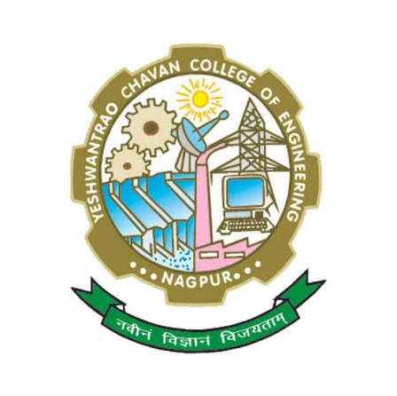

STEP 01
Get dataset
Fetch up to 8,000 recent records from ThingSpeak Channel 3500819.
Waiting for dataset.

Fetch historical sensor readings from ThingSpeak, train a browser-based baseline model, and screen the latest operating point. Low voltage during low-light conditions is treated as insufficient light rather than a panel fault.
Fetch up to 8,000 recent records from ThingSpeak Channel 3500819.
Learn the normal voltage baseline from historical high-light samples.
Compare latest voltage with the learned high-light baseline.
Click Get Data, then Train Model.
No prediction available yet.
| Parameter | Value |
|---|---|
| Timestamp | — |
| PV voltage | — |
| Light intensity | — |
| Panel temperature | — |
| Learned baseline | — |
| Voltage deviation | — |
The model learns a robust reference voltage from historical records captured under high-light conditions. Median voltage is the baseline; median absolute deviation (MAD) estimates normal variation. This is a transparent baseline anomaly model suitable for an initial project demonstration.
Engineering limitation: this is AI-assisted anomaly screening, not a certified degradation diagnosis. PV terminal voltage while charging is affected by battery state of charge, charge-controller operation, load, panel temperature and sensor calibration. Lux is not calibrated irradiance in W/m². Inspect the system and compare controlled I–V / power measurements before confirming degradation.